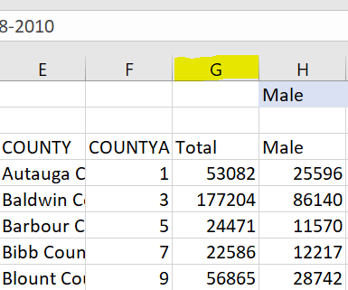
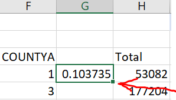
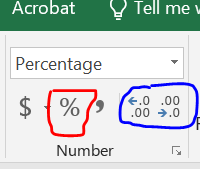
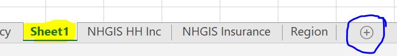
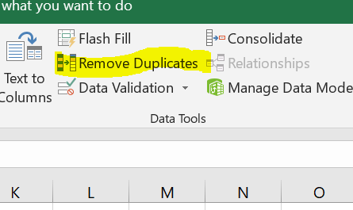

Lab 2: Managing Data in Excel
Outline
Objectives
In this lab, you will:
- review how to do row-wise calculations in Excel
- create new spreadsheets using data from other sheets
- merge data using sumifs and index match
Software
This lab will be done in Excel.
Data
Grade
For this assignment, answer the associated questions on Canvas. You will not turn in your spreadsheet.
Part 1: Get to know your data
Step 1: Open the data
Download the Life Expectancy-Insurance data spreadsheet from above. Open the file in Excel or Google Sheets. The file has 4 sheets:
“Life Expectancy” – life expectancy by county, state, and the entire US for the years 1985 to 2010; the data come from the Global Health Data Exchange
“NHGIS HH Inc” – median household income in 2010; the data come from the Census, gathered through NHGIS
“NHGIS Insurance” – population counts of insured and uninsured people by county, broken down by age and sex, in 2010; this data also comes from the Census, gathered through NHGIS
“Region” – regions assigned to states There are several different data types represented in these sheets.
What kinds of data types are each of the variables? (A tricky one here is the FIPS code for each county; even though it looks like a number, it is actually a categorical variable because the numbers represent categories.)
Part 2: Perform variable calculations
Step 2: Calculate the uninsured rate
We want to find the uninsured rate for people under the age of 65, since people over the age of 65 are usually covered by Medicare. Go to the “NHGIS Insurance” sheet. Make an empty column between the COUNTYA column and Total column. To do this, click on the letter of the column to the right of where you want to make a column. (See Figure 1.)

Now that you have the whole column selected, you can add a new column in two ways: 1) Right-click the column letter again (same as Figure 1) and select “Insert”. 2) Use the keyboard shortcut: “Ctrl+Shift++” on Windows, or “Control+I” on Mac. The second ends up being a lot faster! The formula for uninsured rate is: \[ uninsured\ rate = \frac{uninsured\ population}{total\ population} \]
Add the . In cell G4, type =sum(, a function that adds all of the values inside the parentheses. Add the male and female uninsured under 65 columns. Close the parentheses. That is the numerator. Use a forward slash to indicate you want to divide, then the denominator will be the sum of the total population under age 65, which you need to add two columns together for. It should look like =sum(...)/sum(...), and once you hit “Enter”, the value should be 0.103735. The “Total_Pop” column includes those over age 65, so using that as the denominator will not get you the right answer.
Step 3: Populate the column
To populate the entire column with the uninsured rate for each county, select cell G4, and either: 1) Click the little green box in the bottom right corner of the cell (see Figure 2) and drag it down, or 2) Double click the little box in the bottom right corner of the cell.

While the whole column is selected, change the data type to percentage. In the ribbon at the top, go to “Home” and under “Number”, select the percent sign (see the red circle in Figure 3). You can display more or fewer decimal places by selecting the buttons circled in blue in Figure 3.

Add a variable name in cell G3 so you know what it is. I would put something like “unins_rate”.
Step 4: Calculate some descriptive statistics for the uninsured rate
Explore the uninsured rate a little bit. In an empty cell in the “NHGIS Insurance” sheet, type =AVERAGE(. Then, select all of the values for the uninsured rate. Select cell G4, then hit “Ctrl+Shift+Down Arrow” (or “Command+Shift+Down Arrow” for Mac). Then, hit enter. You should get the answer 16.7%. Also calculate the median using =MEDIAN().
Part 3: Merge data
Step 5: Remove life expectancy for years besides 2010
We only need the life expectancy for 2010. We could go through and manually delete every year besides 2010, but this is a lot of work, and it’s bad form to delete data. (What if we figure out we need the data for 2008 later on?) Start a new sheet. At the bottom of the screen where there are the tabs with the sheets, click the circle with the plus sign inside (see the blue circle in Figure 4). This will start a new sheet called “Sheet1”. Rename it something descriptive (like “Life Exp 2010”) by right clicking the sheet tab (see highlighted area in Figure 4).

From the “Life Expectancy” sheet, copy the “fips” column by selecting the whole column (click the letter C at the top) and either right clicking and selecting “Copy” or using the keyboard shortcuts (“Ctrl+C” for Windows, “Command+C” for Mac). Paste the column in your new sheet by either selecting cell A1 and hitting the keyboard shortcut for paste (“Ctrl+V” for Windows or “Command+V” for Mac), or by right clicking cell A1 and selecting “Paste”.
Remember that to merge data we need a key, or a variable that uniquely identifies each of our units of observations in both datasets. For instance, if we were managing a company we may want a customer ID in each of our datasets on sales and customer history so that we can match those exactly without matching observations that actually aren’t the same customer.
“FIPS” is a good key for our data. A FIPS code is a commonly used code where the first one to two digits represent the state, and last 3 digits represent the county. This means that each county has one FIPS code, and no FIPS codes are the same. (Many counties have the same name! There are multiple “Montgomery Counties”, for instance.) To get rid of the duplicate codes, select the column with the pasted FIPS code, and in the top ribbon go to “Data” and “Remove Duplicates” (see Figure 5).

In column B, write a column name called “Female Life Expectancy” in cell B1. We will merge the 2010 values from the “Life Expectancy” sheet into the new sheet. The easiest way to do this is a =SUMIFS() function. We will ask it to sum any values that equal the county and year we want, which should just be one value. SUMIFS requires:
a sum_range (the values you are adding together)
criteria_ranges (which column or row has the criteria you want)
criteria (which values in the criteria range meet our condition)
The sum_range is column E from the sheet “Life Expectancy” - FemaleLE. To select this column, select cell E1 and hit “Control+Shift+Down Arrow” for Windows or “Command+Shit+Down Arrow” for Mac. This will select E1:E81692. We want to make sure the range stays the same even as we copy our function to different rows, so make the cell references into absolute references by putting dollar signs in front of them. You can either manually put them in, or before you do anything else, hit F4.
Next, select a criteria range. Our first criteria will be the fips code. Select the fips column in the “Life Expectancy” sheet like you did for female life expectancy, and make the cell references absolute. The criteria is the fips code in the row we are merging to. Select cell A2 in the “Life Exp 2010” sheet. Keep this cell reference relative (no dollar signs), since as we copy the function down, we want the county fips criteria to change.
Our second criteria is year: 2010. Select the year column in “Life Expectancy” as the criteria range, make the reference absolute, and for the criteria, just type “2010”. The final formula will look something like this: =SUMIFS('Life Expectancy'!$E$2:$E$81692,'Life Expectancy'!$C$2:$C$81692,'Life Exp 2010'!A2,'Life Expectancy'!$D$2:$D$81692,"2010") That’s long and confusing! If you get it the first time, then great job! You may have to trouble shoot for a while. Double click the box in the lower right corner to send the function down the line.
For merging, the sum_range and criteria_range come from the sheet we’re getting data from, and the criteria comes from the sheet we’re merge the data to.
Troubleshooting
Are your ranges the same? If one column has row 2 to 1,000 selected, then all of the columns should have those rows selected. You can’t have one range be “A:A”, and another be “B2:B2385”, and another be “C1:C2385”.
Did you accidentally delete or double up the sheet name?
Do you have a criteria associated with each of your criteria ranges?
If your criteria is typed in, is it in quote marks?
Step 6: Add male life expectancy
Do the same for male life expectancy. Now you have a sheet that has the FIPS code and male & female life expectancy for 2010.
Step 7: Merge the other data
Merge all of our variables onto the same sheet. We will use the sheet with the 2010 life expectancy as our master sheet. We want the following variables:
County ID (FIPS)
County Name
State Name
Life Expectancy – Women
Life Expectancy – Men
Uninsured Rate
Region
Add two new columns between the FIPS column and life expectancy column like we did in step 2. Label these “County” and “State”. Because these are text variables, we need to use a different function than SUMIFS. We will use INDEX(MATCH()). MATCH is a function where you provide a value to look up, and it searches an array (list of values) and tells you the location (row number) of the first time that value appears. INDEX is a function that returns a value from an array at whatever location you tell it. So, MATCH finds the row that contains the right observation using the key, and INDEX returns the value you want from that observation.
On the “INDEX MATCH Practice” sheet, practice using MATCH and INDEX. You will find Kelsey’s ID #, and the name of person #34.
In F2, use
MATCHto find the location of Kelsey’s ID using=MATCH("Kelsey", A2:A19, 0).In F4, use
INDEXto find the ID# in the 11th row using=INDEX(B12:B19, 11).In F6, combine the 2:
=INDEX(B2:B19, MATCH("Kelsey", A2:A19, 0)).Do the opposite now: fill out H2, H4, and H6 for finding the name associated with ID#34.
If you’re still confused, try a few more: find the ID# for Linda, and find the name of the person with ID# 95.
Find the row number of the county you want by using MATCH, looking up the FIPS code from the row you are on in the “2010 Life Exp” sheet in the FIPS column in the “Life Expectancy” sheet. In the INDEX function, use that value to look in the County column in the “Life Expectancy sheet. For all of the columns, make sure they are absolute cell references. Your function should look like this:
=INDEX('Life Expectancy'!$B$2:$B$81692,MATCH(A2,'Life Expectancy'!$C$2:$C$81692,0))
Click the box in the lower right corner of the cell to copy the function down the column. Use a similar function to merge the state name as well.
In the “NHGIS Insurance” sheet, there is not a fips code. We will need to create a FIPS code column using the STATEA and COUNTYA columns. Create a new column just before the uninsured rate column. Treat the fips like a number and multiply STATEA by 1,000 and add it to COUNTYA. This is the easiest option, and then the first 1 or 2 digits represents the state, and the last 3 digits represent the county.
Once we’ve created the fips code, we can merge the uninsured rate into the “Life Exp 2010” sheet using either INDEX(MATCH) or SUMIFS.
Click on the first life expectancy value and hit “CTRL+down arrow” to jump to the bottom. How many rows are there? Do the same for the uninsured rate. The number of rows isn’t the same! The insured population is only available for counties with more than 20,000 people, so there is missing data. This is why we can’t just copy and paste. This also means that you will see some rows with “#N/A” values after you merge.
Last, add the region. Use INDEX(MATCH) to get region from the “Region” sheet.
Step 8: Remove rows with missing data
When data is missing, there are several things you can do – find replacement data, make educated guesses about what the right numbers are, or deleting rows. For this project, we will delete rows with missing data.
Because there are so many INDEX(MATCH) and SUMIFS, sorting screws things up. Change the spreadsheet so it has static data rather than formulas. Copy the columns and paste them in the same place by right clicking and selecting the Paste clipboard with “123” in the bottom corner. This will paste the values as values rather than a formula.
Sort the data by the uninsured rate by going to the “Data” tab in the ribbon and hitting the “Sort” button. Sort by the uninsured rate.
Your data will either have zeroes or #N/As, and we want to delete these rows. Select row 2 by clicking the “2” on the left side of the window. Then, scroll down to the last row with missing data, and click the number next to that row while holding the Shift key. You can delete the data by right clicking and selecting “Delete” or by hitting “Ctrl+-” (or “Command+-” for Macs). You should delete over a thousand rows.
Woohoo!
The data is now prepared to do the analysis! SAVE YOUR FILE because we will use this data in the future.
Resources
If you need more help with absolute or mixed cell references, you can check out these resources:
Relative and Absolute Cell References Video